Project Overview
In today's fast-paced world, many people struggle to maintain fitness routines due to time constraints, lack of equipment, or gym access. Flexly was designed to eliminate these barriers by providing accessible, equipment-free bodyweight workouts that can be done anywhere, anytime.
The app targets beginners and busy professionals who want to stay fit without spending hours at the gym, offering personalized workout plans that fit into any schedule.
The Problem
Through user research and competitive analysis, I identified several critical pain points:
- Limited Accessibility: Many people don't have access to gyms or fitness equipment
- Time Constraints: Busy professionals struggle to find time for lengthy workout sessions
- Intimidation Factor: Beginners feel overwhelmed by complex gym equipment and routines
- Lack of Flexibility: Traditional fitness apps don't accommodate varying schedules and locations
- Poor Motivation: Users struggle to stay consistent without proper guidance and progress tracking
Target Audience
Primary Users: Beginners who are new to fitness and want to start with simple, achievable workouts without equipment.
Secondary Users: Busy professionals who travel frequently or have unpredictable schedules and need flexible workout solutions they can do anywhere.
User Goals: Lose weight, build muscle, improve flexibility, and maintain overall fitness without gym membership or equipment investment.
Design Process
1. Research & Discovery
I analyzed leading fitness apps including Nike Training Club, FitOn, and Seven to understand market standards and identify gaps. Key insights revealed that users wanted simpler onboarding, clearer exercise demonstrations, and better progress visualization.
2. User Personas & Journey Mapping
I created detailed personas representing beginners and busy professionals, mapping their pain points, motivations, and ideal user flows. This helped ensure every design decision aligned with real user needs.
3. Information Architecture
The app structure was designed to minimize friction and maximize engagement:
- Onboarding → Goal Setting → Personalized Plan Creation
- Home → Quick Start Workouts → Guided Exercise Sessions
- Progress Tracking → Visual Analytics → Achievement Milestones
4. Wireframing & Prototyping
Starting with low-fidelity wireframes, I rapidly iterated on layout concepts before moving to high-fidelity designs. This approach allowed me to test and refine the user experience early in the process.
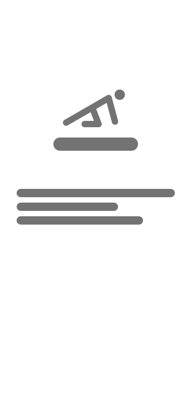
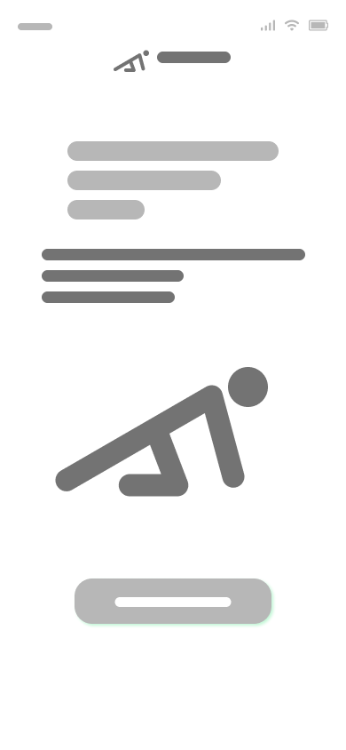
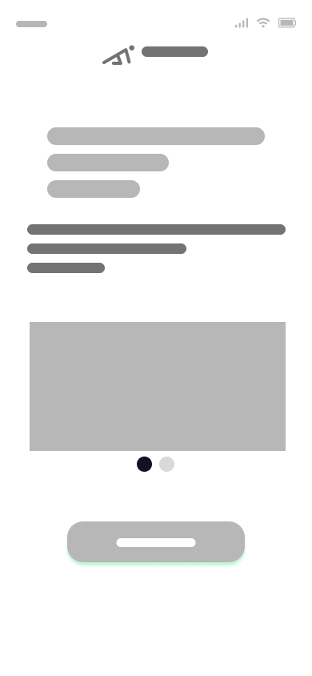
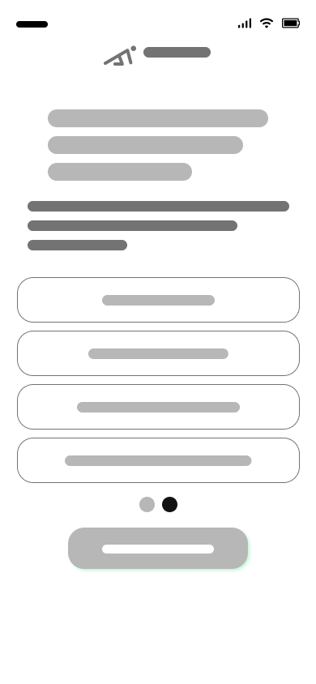
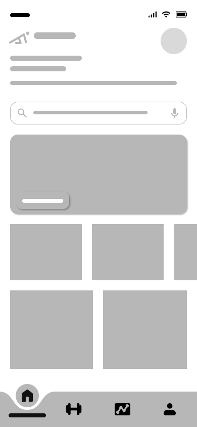
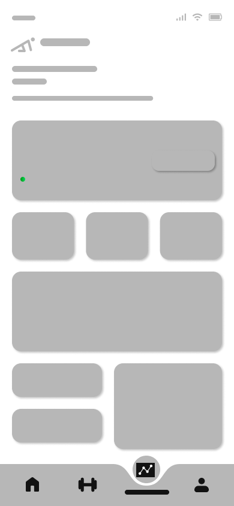
Design Decisions
Color Palette
The vibrant green color scheme was strategically chosen to convey energy, growth, and positivity:
Why Green? Green symbolizes health, vitality, and growth—perfectly aligned with fitness goals. The vibrant shade creates an energetic, motivating atmosphere while maintaining professionalism.
Typography & Visual Hierarchy
Bold, modern typography ensures readability during workouts. Large headings and clear CTAs guide users through exercises without confusion, even when viewing from a distance during training.
Key Features & Screens
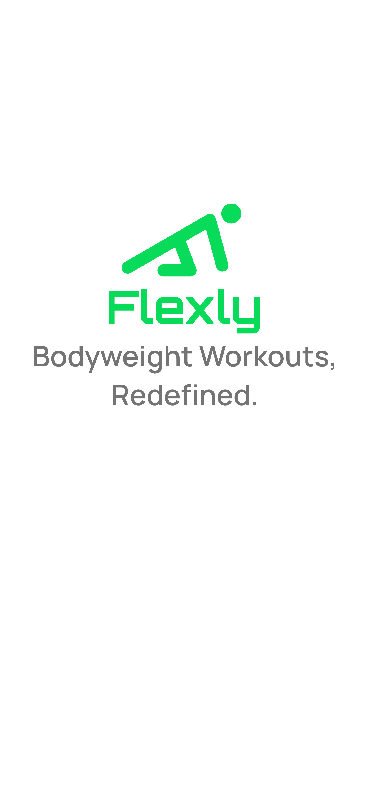
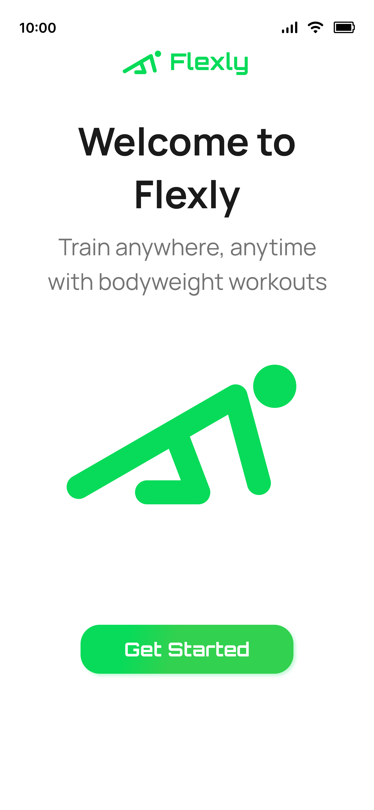
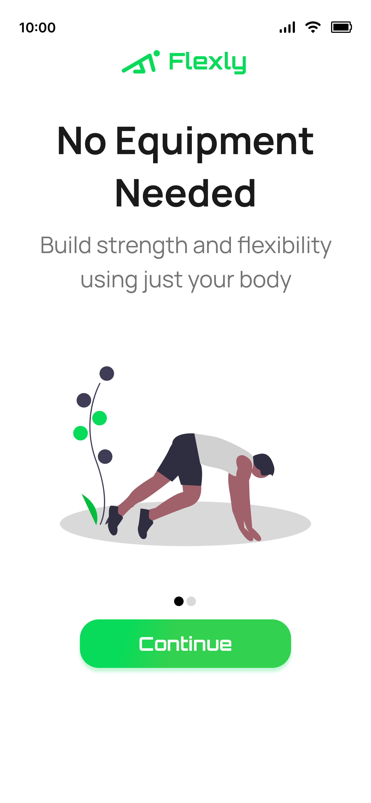
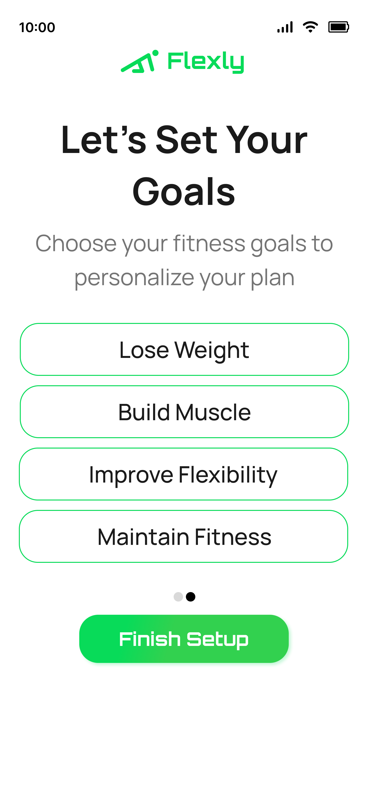
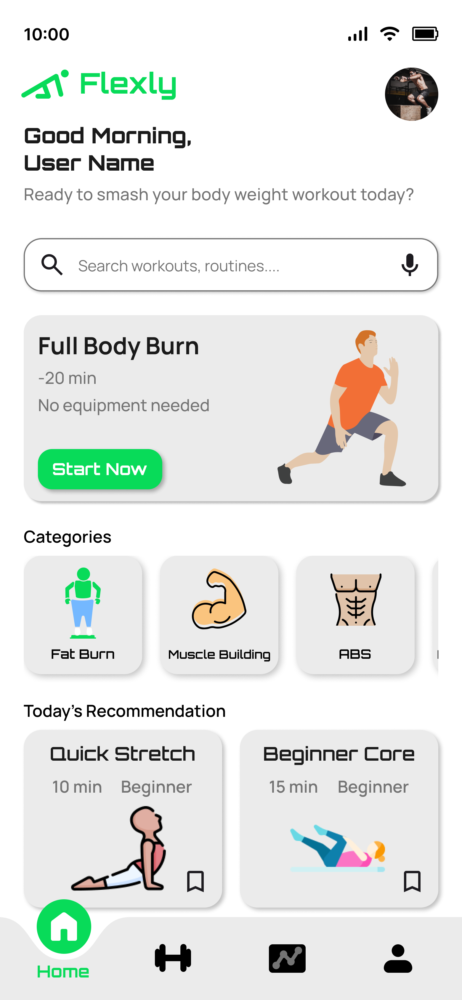
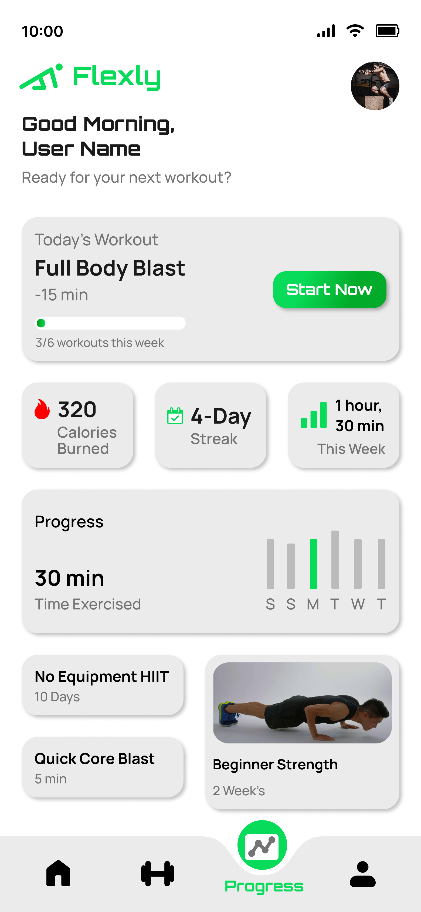
1. Engaging Onboarding Experience
The onboarding flow introduces Flexly's core value proposition immediately: "Train anywhere, anytime with bodyweight workouts." Users are guided through a simple goal-setting process that personalizes their fitness journey from day one.
2. Personalized Goal Setting
Users can choose from multiple fitness objectives—lose weight, build muscle, improve flexibility, or maintain fitness. This customization ensures workout recommendations align with individual goals.
3. Intuitive Home Dashboard
The home screen provides immediate access to daily workouts, progress stats, and personalized recommendations. Featured workout categories (Fat Burn, Muscle Building, ABS) allow quick navigation to specific training areas.
4. Comprehensive Progress Tracking
Visual analytics display calories burned, workout streaks, and time exercised. The weekly progress chart motivates users by showing consistent improvement over time.
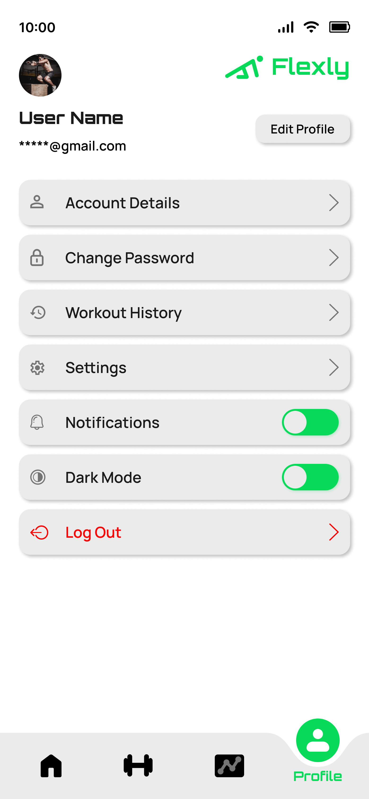
5. Clean Profile & Settings
The profile section offers easy access to account management, workout history, and app customization including dark mode support for evening workouts.
Challenges & Solutions
Challenge 1
Problem: How to clearly demonstrate exercises without overwhelming users with video content
Solution 1
Used high-quality illustrations combined with concise text descriptions and timer indicators for a clean, focused experience
Challenge 2
Problem: Keeping users motivated without gamification gimmicks that feel childish
Solution 2
Implemented meaningful progress tracking with workout streaks and achievement milestones that celebrate real fitness progress
Challenge 3
Problem: Balancing simplicity for beginners with depth for advancing users
Solution 3
Created a layered information architecture where beginners see simple quick-start options while advanced features remain accessible
Design Principles
Accessibility First
No equipment, no barriers. Every workout should be achievable by anyone, anywhere.
Clarity Over Complexity
Exercise instructions must be instantly understandable, especially during active workouts.
Motivational Design
Visual feedback and progress tracking create positive reinforcement without feeling gimmicky.
Flexible by Default
Respect users' varying schedules with workouts ranging from 5 to 30 minutes.
Key Takeaways
- Remove friction: The best fitness app is one that removes every excuse. No equipment, no commute, no complexity.
- Visual hierarchy matters during motion: Users need to quickly glance at instructions while exercising. Large, clear text and illustrations are essential.
- Progress visualization drives retention: Seeing tangible improvement through charts and streaks keeps users engaged long-term.
- Personalization increases commitment: When workouts align with individual goals, users are more likely to stay consistent.
Impact & Results
Flexly demonstrates my ability to design solutions for real-world problems in the health and fitness space. The design focuses on accessibility, simplicity, and user motivation.
- Created an inclusive fitness solution requiring zero equipment
- Designed an onboarding flow that personalizes from the first interaction
- Developed a progress tracking system that motivates without overwhelming
- Built a scalable design system for future feature expansion
Next Steps
If this project were to move forward, I would:
- Conduct usability testing with target users to validate workout flows and navigation
- Design social features for community support and accountability
- Create an exercise library with detailed video demonstrations and modifications
- Add nutrition tracking to provide a holistic health and fitness solution
- Implement adaptive difficulty that adjusts workouts based on performance and progress